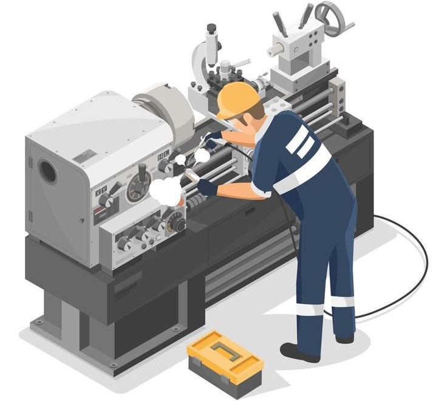

Récentes Aventures
01
Serrure à Badge RFID
Conception d'une serrure à badge RFID à base d'arduino
Prototype Avec Arduino et Réalisation.
02
SYSTÈME EMBARQUÉ TEMPS RÉEL
Système informatique intégré garantissant des réponses dans un délai strict.
TIA Portal PLC.
03
Mise en place d’un système de détection d’intrusion (IDS)
Dispositif surveillant le réseau pour détecter et signaler les intrusions.
Magnétisme | Electronique
04
CHAÎNE D'ACQUISITION ET DE COMMANDE
Ensemble traitant des données capteurs pour piloter des actionneurs physiques.
Step7 | Python | Arduino
05
Un générateur de motif à LED.
Circuit électronique générant des motifs lumineux variés avec des LED.
Electronique & Arduino



Portfolio Académique
Synthèse des portefeuilles de compétences réalisés chaque semestre à ESIG Global Success. Chaque session regroupe les projets menés — cliquez sur « Détails » pour ouvrir le document correspondant.
Semestre 1 · 2023 – 2024
01
Bilan de Compétences — Semestre 1
Synthèse des 6 SAE du semestre : programmation C/C++, approche algorithmique, virtualisation (VirtualBox), création de bases de données SQL, recueil de besoins et culture d'entreprise.
C / C++ · SQL · VirtualBox
Semestre 2 · 2023 – 2024
01
Application Agenda en C++
Développement d'une application agenda entièrement en C++ (SAE 201), sans framework web, pour approfondir la maîtrise du langage.
C++ · Développement desktop
Semestre 3 · 2024 – 2025
01
Système de Production Automatisé
Analyse, conception et programmation d'un système automatisé (SAE 301) : Ladder, GRAFCET, TIA Portal et supervision SCADA.
Ladder · GRAFCET · TIA Portal · SCADA
Semestre 4 · 2024 – 2025
01
Gestion d'Atelier de Maintenance Industrielle
Étude des structures de guidage mécanique et des lignes de transmission (bifilaire, câble coaxial) pour le transport des signaux.
Maintenance industrielle · Transmission de signal
02
Surveillance et Contrôle d'un Entrepôt
Modélisation MERISE (MCD/MLD) d'un système de supervision : capteurs, alarmes, historique et consultation utilisateur.
MERISE · MCD/MLD · Supervision
03
Stage d'Immersion Professionnelle — GEOTECH SA
Mise en place d'un partage de fichiers sur cloud privé et d'un outil collaboratif pour l'entreprise GEOTECH SA.
Cloud privé · Outils collaboratifs
Semestre 5 · 2025
01
Détection de Collision avec Arduino
Projet d'examen en équipe : détection de collision par capteurs pilotée par Arduino.
Arduino · Capteurs
02
Système Embarqué Temps Réel
Étude d'un système embarqué temps réel appliqué à la domotique, réalisée en équipe.
Systèmes embarqués · Domotique
03
Fuite de Flux Magnétique sur Lignes de Transport
Utilisation de la fuite de flux magnétique pour détecter les défauts sur les lignes de transport d'énergie électrique.
Électrotechnique · Diagnostic
04
Détection d'Intrusion (IDS) avec ESP32
Mise en place d'un système de sécurité intelligent avec ESP32 pour la détection d'intrusion, réalisée en équipe.
ESP32 · Sécurité · IDS
05
IO-Link dans l'Industrie 4.0
Étude du rôle de la technologie IO-Link dans les systèmes industriels connectés de l'Industrie 4.0.
IO-Link · Industrie 4.0
Semestre 6 · 2025 – 2026
01
Robotique & Vision Industrielle
Intégration d'outils communicants et numériques dans un système automatisé : vision industrielle, tri automatique et jumeau numérique.
Vision industrielle · Robotique · Jumeau numérique
02
Cahier des Charges — SAEII601
Cadrage du module SAEII601 : maintien en condition opérationnelle, intégration commande/contrôle et conception GEII d'un système automatisé.
Cahier des charges · GEII
03
Jeu de Lumière Astable à Deux Transistors
Rapport de projet électronique : conception d'un jeu de lumière basé sur un montage astable à deux transistors.
Électronique analogique
04
Synthèse — Fondamentaux de l'Industrie 4.0
Synthèse de cours sur la connexion des équipements industriels, la collecte et la transmission de données en temps réel.
Industrie 4.0 · IIoT